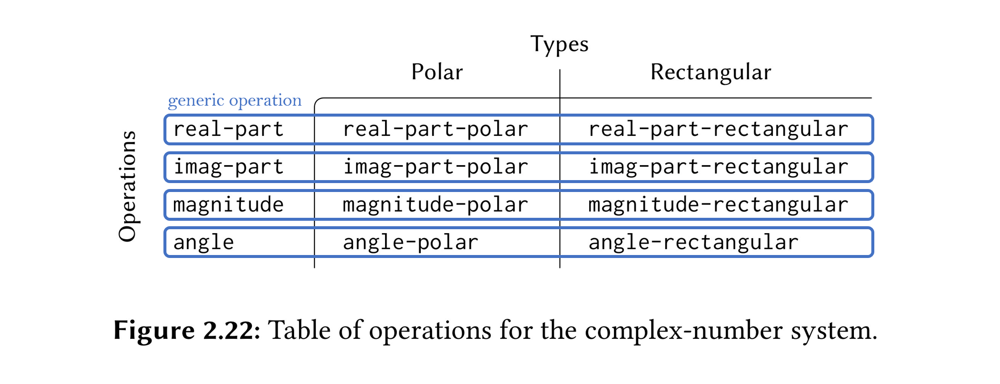
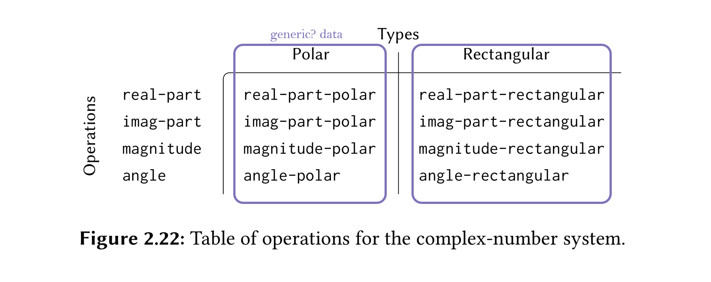
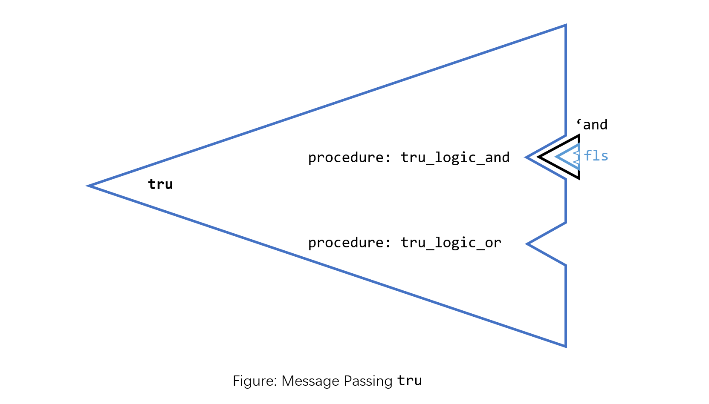

本文概述
SICP § 2.4.3 中描述了以查表（ type × operation 二维表）为实现方式的泛型系统，具体函数被隐藏在泛型函数 + Selector 这样的抽象之下，那么如果将具体函数放在数据 + Selector 这样的抽象之下是什么样的呢，本文呈现了符合此抽象（SICP 中称为 Message Passing）的 Boolean. 接下来从 Message Passing，Haskell 中的 $ 和 Haskell 中的代数数据类型 三个角度聊聊数据与函数之间的关系. Message Passing - 让数据自己携带函数；Haskell $的应用 - 将数据变成某种函数；Haskell中的代数数据类型 - 使用函数构造数据.
泛型函数：Intelligent Operations
在 2.4.3 这一节中，作者构建了一个泛型系统，泛型是什么呢，是一种抽象；对于若干个具备某种相同特性的类型，如果我们可以对于其中某个类型，依赖这个特性写一个函数，那么我们希望将这个函数推广到具备这个特性的其他类型，例如：对于两个 Int 类型的值，我可以对其最大值进行计算（max Int Int），因为 Int 是可以比较 (Orderable) 的，即，Int 类型提供了 > / < / … 等比较函数的实现，那么，对于其他可比的（提供比较函数实现的）类型，我们希望可以将 max 推广到这些类型：
max :: (Ord a) => a -> a -> a
max x y = if x >= y then x else y
我们将可比这个特性抽象成 Ord 类型类（type class），max 函数可以作用于任意该类的成员类型.
当我们在任意 Ord 类的类型上应用 max 函数时，编译器会帮我们找到对应类型的 >= 的具体实现.
那么如何找到？一种答案是：查表. 当我需要对 Float (type) 执行 max (operation) ，那么我在 type × operation 的笛卡尔积中找到 (Float, max) 对应的函数 (也就是 Float 对应的 max 非泛型具体实现) 就可以了.

SICP Page 252: 泛型就是把 type × operation 这张表分解成一行一行的，每个泛型函数代表一行. ✨
数据与函数的边界
Intelligent Operation? WHAT IF Intelligent Data Objects?
在本文上一节中提到的泛型（泛型函数）中，数据作为被操作的客体存在，数据的工作就是被函数作用，我们的泛型针对的是函数（operation），在我们的预期中，我们希望函数是聪明的，比如 max :: (Ord a) => a -> a -> a 是聪明的，对于它所作用的具体类型，它可以"自动"转变成该类型对应的非泛型具体实现 max :: Int -> Int -> Int. 而数据只需要等待被作用就可以了.
𝐖𝐡𝐚𝐭 𝐢𝐟: 让泛型函数找到数据对应的具体实现 → 让数据找到函数对应的具体实现？从分解 type × operation 表的角度说，将这张表分解成一列一列的，让某种数据（对应generic operation，暂且称之为 generic? data）代表一列，这样如何呢？
在 SICP 2.1.3 中谈及组合数据的提取时对此就有所呈现，本站的上一篇博客也有提到. 在 SICP 2.1.3 中的侧重点在对组合数据本身的操作（提取字段）上：为了保证列表元素存取前后的一致性，我们将列表写成一个 procedure 向外提供，此 procedure 接收参数，并根据参数返回对应的列表元素.
这里我们关心的是数据在程序中的行为，即 数据如何与函数、其他数据进行交互，我们希望数据自己携带与其他数据的交互方式，而不是让数据作为只能被其他函数作用的静态实体. 基于这样的想法，尝试着写一个这样符合这样的行为规范的 Boolean.
携带函数的 Boolean
首先给出类似的 type × operation 二维表，只是简单建模，所以只考虑与（logic_and）或（logic_or）两种运算：
类似于代表一行的泛型函数，写一个可以代表一列的"数据"，TRUE, FALSE列对应的标识符分别为 tru, fls，如何让数据携带函数，一种答案是 让数据本身就是一个可以接收参数的函数，由参数来提取数据携带的函数：
(define tru ; (define tru (lambda ...))
(lambda (op)
(cond ((eq? op 'and) tru_logic_and)
((eq? op 'or) tru_logic_or)
)
)
)
(define fls ; (define fls (lambda ...))
(lambda (op)
(cond ((eq? op 'and) fls_logic_and)
((eq? op 'or) fls_logic_or)
)
)
)
lambda - cond 对应的函数（也就是柯里化的逻辑与或）实现如下：
(define (tru_logic_and x) (if (eq? x tru) tru fls)) ; 1 AND x
(define (tru_logic_or x) tru) ; 1 OR _ = 1
(define (fls_logic_and x) fls) ; 0 AND _ = 0
(define (fls_logic_or x) (if (eq? x tru) tru fls)) ; 0 OR x
在 REPL 中查看 tru fls：毫无疑问两者都是 compound procedure
1 ]=> tru
;Value: #[compound-procedure 13 tru]
1 ]=> fls
;Value: #[compound-procedure 12 fls]
做一个简单的测试：
1 ]=> ((tru 'and) fls)
;Value: #[compound-procedure 12 fls]
这里我们做了什么事情呢？首先 tru 是接收符号参数的一个 lambda 表达式，(tru 'and) 得到的是 tru_logic_and —— 一个柯里化的逻辑与（也就是已经传入了一个 TRUE 的逻辑与），然后将 tru_logic_and 应用于 fls ，最后的返回值是 compound procedure fls.
给出图示如下：
如果表达式长一些：如果忽略一部分括号，看起来就是中缀的逻辑表达式
1 ]=> ((((fls 'or) tru) 'and) fls) ; ((0 or 1) and 0)
;Value: #[compound-procedure 12 fls]
如果更偏好前缀调用，可以做一层小封装：
(define (logic op x y) ((x op) y))
对 logic 进行测试：
1 ]=> (logic 'and tru fls)
;Value: #[compound-procedure 12 fls]
1 ]=> (logic 'or (logic 'and fls fls) tru) ; (or (and 0 0) 1)
;Value: #[compound-procedure 13 tru]
→ Message Passing: 看待数据的另一种视角
上面这种构建 Boolean 的编程风格被称为 Message Passing：一个数据是一个接收操作名（message）的实体，例如：tru 可以接收 'and / 'or 这样的 Message 并返回对应的柯里化函数供我们后续使用. 在这样的视角下，数据本身和数据所携带的方法一样重要，也是"数据即程序"的一种体现. 不知道看到这里的你是否也在此处察觉到了一些面向对象的风味.
Haskell 中的 $
$ 是一个中缀调用的函数，其类型签名和优先级如下，它的作用是改变表达式求值顺序，一个客观结果是 $ 的使用减少了代码中的括号量，
ghci> :i ($)
($) :: (a -> b) -> a -> b -- Defined in ‘GHC.Base’
infixr 0 $
将 $ （柯里化）应用于一个值，返回值是一个函数：
ghci> x = 5 :: Int
ghci> :t ($ x)
($ x) :: (Int -> b) -> b
一种理解是：($ x) 把 x 从静态数据，变成了一个等待被函数 Int -> b 作用的数据（从类型签名上看，这是一个函数）. 基于这种理解，可以写这样的代码：
ghci> map ($ 5) [(* 2), (+ 10), (^ 3)]
[10,15,125]
Haskell 中的代数数据类型
经典的代数数据类型对二叉树进行递归定义：
data Tree a = Empty | Node a (Tree a) (Tree a)
Empty 和 Node 是 Tree a 的值构造子，值构造子就是返回某种类型的值的函数. Empty 是无参构造子，Node 接受 a，Tree a，Tree a三个值参数.
Tree a 是类型构造子，类型构造子是返回某种具体类型的函数，Tree a 接受 a 一个类型参数，返回相应的具体的 Tree 类型. 例如 Tree Int，Tree Char 分别是结点数据类型为 Int, Char 的 Tree.
这里可以看出 Haskell 非常漂亮的语言设计上的一致性，没有特殊的泛型语法，只有函数贯穿始终.